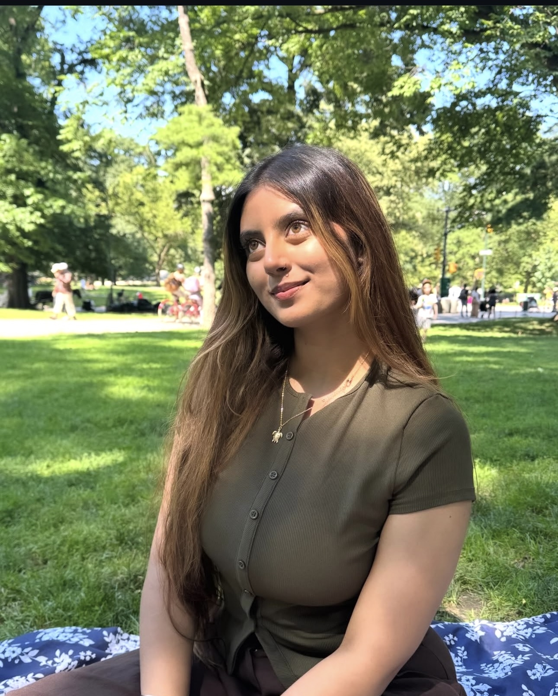

Sensitive, welcoming, passionate.
Not in the dramatic poster way. More like: she feels the world with texture. She can be warm without becoming available to everything.
found line: "sensitive, welcoming, and passionate"A tiny gift, carefully noticed
A small scrollable museum of the things that make her feel like her: the softness, the spark, the peace, the details, and the stubborn little right to remain herself.
Begin gently
First, the feeling
Some people enter a room loudly. Ishaa seems more like a change in lighting. You notice the calm first. Then the humor. Then the fact that there is probably a whole plan forming behind those eyes, even if she says it casually.
The inner map
Not in the dramatic poster way. More like: she feels the world with texture. She can be warm without becoming available to everything.
found line: "sensitive, welcoming, and passionate"The beautiful part is not that she wants peace. It is that she knows peace is not passive. It is chosen, protected, and sometimes defended with a very calm no.
found line: "genuinely at peace and ease"She can want closeness and still need room. The right kind of love would not ask her to shrink. It would learn the shape of her space.
found line: "complete independence"The day she would build
It starts with sunrise, because of course it does. Then children, an independent cafe, cycling, thrift stores, pet shops, vintage corners, a lake, painting, reading, dessert, and somehow another sunrise. That is not just an itinerary. That is her taste in being alive.
The details she keeps
Such a small answer. Such a large instruction. Do not just look at her. Notice her properly.
Translation: she trusts the feeling around a person before she trusts the performance of one.
She likes questions that arrive with care already inside them.
Which is another way of saying: beauty gets her attention, but awareness probably keeps it.
The soft rules
There is a line in her that sounds simple: she will do a lot for someone, until it costs her happiness. That is not cold. That is a self-respect alarm finally working.
Respect first. Chemistry can be loud, but respect is what makes it safe.
Be direct. She seems to prefer clean honesty over pretty confusion.
Do not rush the soft parts. Let her arrive in her own timing.
Notice the little things. The little things are not little to her.
The spark
A person can love peace and still be wonderfully unplanned. That is one of the sweet contradictions here. She can want a stay-in movie night and still belong under city lights. She can be soft love songs one moment and techno the next. She is not inconsistent. She is a playlist with range.
A little portrait
You seem like someone who wants to be understood gently, not solved. Someone who can be playful and deep in the same conversation. Someone who protects her peace because she knows it is precious.
You are not just "independent" or "sensitive" or "passionate." You are the strange, lovely overlap of all of it: the sunrise person, the detail person, the deep-conversation person, the person who wants love to feel honest, peaceful, and free.
Mostly, you feel like someone worth noticing properly.